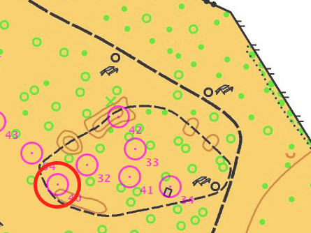
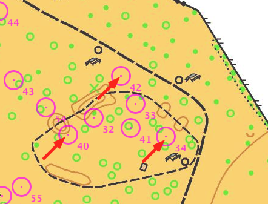
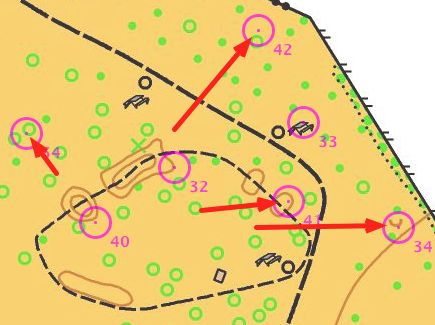

Ajuster la carte et les postes dans la LiveMap
1. cliquez sur le bouton Ajuster pour commencer la calibration
2. cliquez sur un poste de la carte - il appraît comme Poste central dans les paramètres de la carte - ici le poste 40

3. cliquez sur la carte pour indiquer la nouvelle position de ce poste - tous les postes sont déplacés de la même manière

4. cliquez sur un autre poste - ici le poste 42 (choisissez de préférence un poste éloigné du poste central)

5. cliquez sur la carte pour indiquer la nouvelle position du second poste - tous les postes sont mis à l’échelle de telle façon que le poste central (40) reste en position et le second poste (42) est sur sa nouvelle position

Vous pouvez arrêter la calibration à tout moment en cliquant à nouveau sur le bouton Ajuster durant le processus. Par exemple, cliquez sur le bouton après l’étape 3 pour déplacer les postes sans changer l’échelle.
Si besoin, vous pouvez toujours affiner la calibration en jouant sur les paramètres numériques.